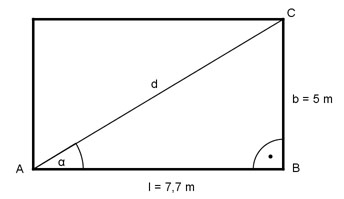

Aufgabe 75 Ein rechteckiger Spielplatz ist 7,7 m lang und 5 m breit. Wie lang ist seine Diagonale d und der Winkel α zwischen der Diagonale und seiner Länge?

Im Dreieck ABC: b 5 m tan α = --- = --------- = 0,6494 --> α = 33° l 7,7 m b sin α = --- |*d d d * sin α = b |:sin α b 5 m d = -------- = --------- = 9,2 m sin α 0,5446